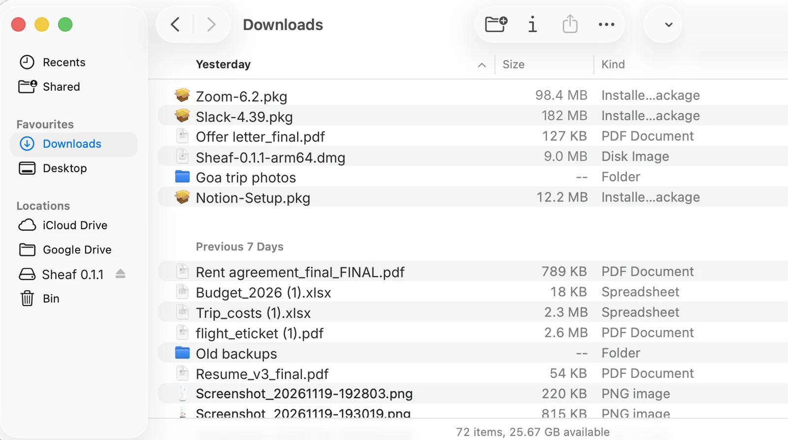
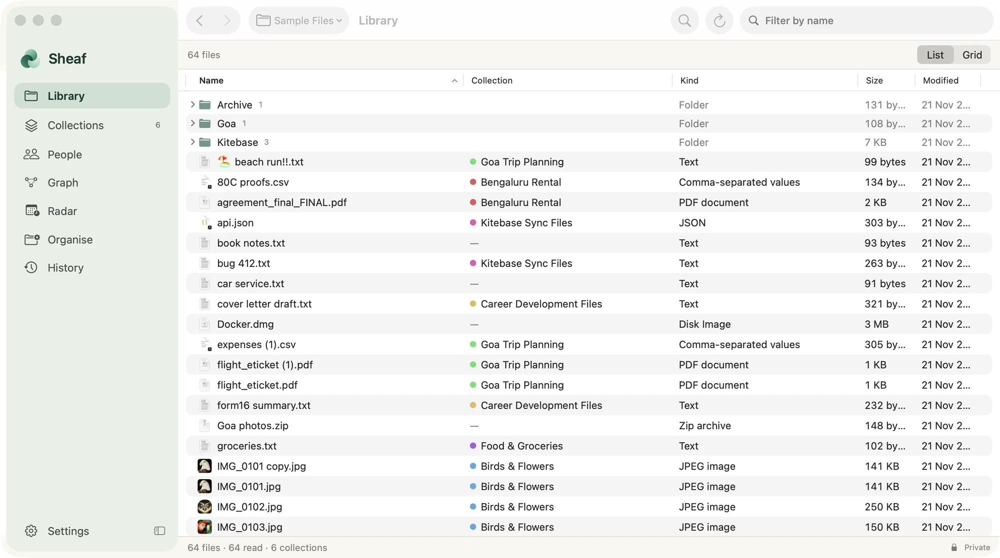
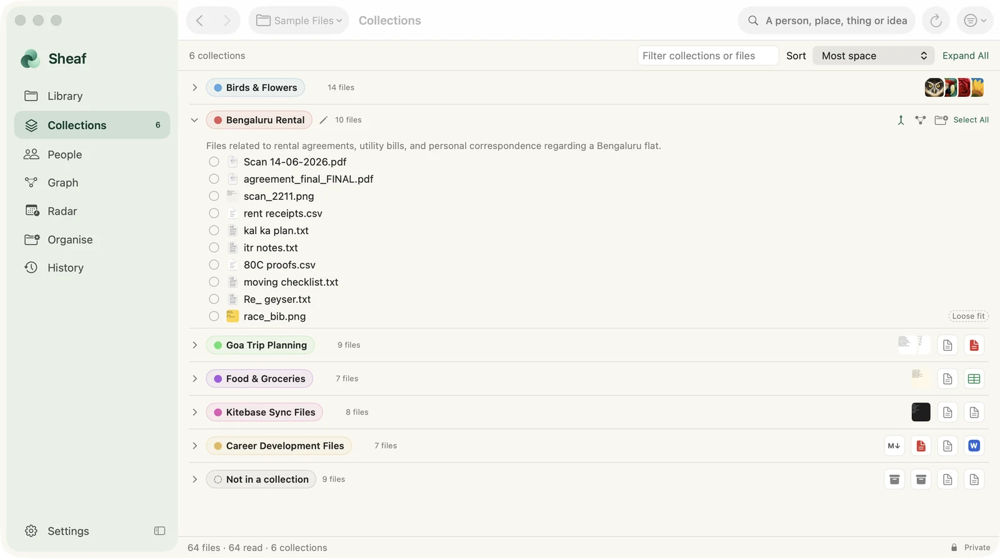

Sheaf reads what is inside your files, groups them by what they are about, and lets you find anything by person, place, thing or idea, not by file name. It is free, needs no account, and the AI runs on your Mac. You approve every move and can undo all of it.


Screenshots of the beta running on the sample folder of invented files, with local models on a Mac.
How many files, how many collections, and every person, place, thing and idea Sheaf found inside them. Click any name to see every file it appears in.

Ask in your own words, like “rent agreement”. Sheaf matches meaning and exact words together, so names, amounts and invoice numbers work too, and a PDF opens on the page that matched. The collection it lives in shows above the results.

Related files are grouped and named by what they are, never by a person’s name. Sheaf recognises the kind of file, so a CV stays with CVs, a job description stays out of them, a passport photo stays out of your trip photos, and code or licence files stay out of your papers. A file that only loosely fits is marked rather than forced in. Drag to merge or move; undo is one click.

Each collection becomes a real folder, shown whole with every file and a clearer name. Every move has a checkbox. Nothing happens until you approve, and History puts everything back.

A map of your collections and the files between them. Step into a collection, follow a file to what relates to it, and spot the files that sit in the wrong place.

More Mac apps now sort files with AI. This is where Sheaf fits, based on public information checked on 21 November 2026.
| Finder | Hazel | Sparkle | ||
|---|---|---|---|---|
| Price | Free, no account | Free, built into macOS | Paid licence, free trial | Included with a paid Every subscription |
| How it sorts | Groups files by what is inside them and proposes folders | You make the folders and move files yourself | Rules you write | AI folders from file names |
| Where the AI runs | AI that runs on your Mac | No AI sorting | No AI sorting | File names sent to a cloud model |
| Search | Meaning, exact words, and people, places and things; opens the matching page | Spotlight: names and text | Not its focus | Not its focus |
| Before files move | You approve a plan; undo all of it | You move everything yourself | Acts as soon as a rule matches | Organises automatically |
| Also | Map of connections, fit score for every file, sample folder to try first | Tags and Smart Folders | Rename, convert, unarchive | Recents and AI Library folders |
Pick Sheaf when you have a messy folder, want it sorted by what the files say, want to find things by who, where or what, and want it free with AI that stays on your Mac.
Details of other products change, so check each vendor. Sources: Hazel, Every on Sparkle. Product names belong to their owners.
Designed to run on an everyday Mac, not a workstation.
The AI runs on your Mac. No account, no telemetry.
Nothing moves until you approve it, and every move can be undone.
Only new and changed files are read again.
Many AI tools charge a subscription and process your files on their servers. Sheaf needs neither.
No subscription, usage fees, ads or account. Core features will not move behind a paywall.
It runs on the Apple Silicon Mac you already have, with local models.
Nothing is required. A GitHub star, an honest bug report or a note on what grouped badly is how early users help most.
Sheaf is a small app. The AI it runs on your Mac is the part that needs space, and it downloads once.
Sheaf works on real folders and is still being built. This is where it stands.
Issues on GitHub decide what gets fixed next. A rough description is fine.
The source is private while the beta settles. When the Sheaf repository on GitHub reaches 100 stars, the source goes public. Until then, the privacy page lists what you can check yourself.